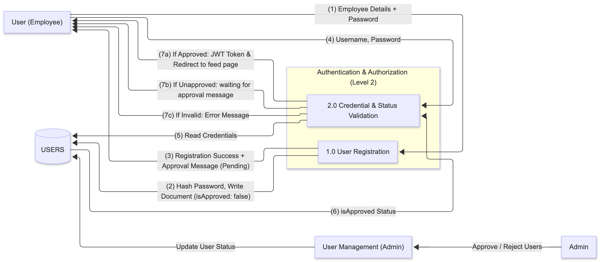

DFD Level 2: Authentication & Authorization
This document provides an overview and detailed flow description for the Authentication & Authorization (AUTH) module, which is responsible for managing user access, registration, and credential validation within the GKMIT_INSIDE.
Overview
The Authentication & Authorization (AUTH) process serves as the entry point for all users (Employee and Admin).
Its primary goal is to securely manage user identity and control access based on administrative approval.
The process interacts directly with the USERS (Table) in the MongoDB Database to store new accounts and validate existing credentials and approval status.
Workflow of Auth & Auth Module

Sub-Processes
| Sub-Process | Description |
|---|---|
| 1.0 User Registration | Handles the initial collection of user details and the creation of a new, unapproved user record in the database. |
| 2.0 Credential & Status Validation | Verifies login credentials and checks the isApproved status before granting access or providing redirect instructions. |
Detailed Flow Description
The DFD Level 2 diagram (left-to-right flow) illustrates two main sequences: User Registration and Credential Validation (Login).
1. User Registration Flow
This flow covers the steps an Employee or Admin takes to create a new account:
-
Employee → 1.0 User Registration : (1) Employee Details + Password
The user submits their registration information —name,email,username,departmentandpassword— to the Registration process. -
1.0 User Registration → USERS (2) Hash Password, Write Document
The process securely hashes the password (using a method likebcrypt) and creates a new record in the USERS collection.
The new document is saved with:
- 1.0 User Registration → Employee (3) Registration Success + Approval Message (Pending)
The system returns a success message indicating that the registration request has been received but requires Admin approval before access is granted.
2. Credential Validation (Login) Flow
This flow covers how users attempt to log in and gain system access:
-
Employee → 2.0 Credential & Status Validation (4) Username, Password
The user submits their login credentials to the 2.0 Credential & Status Validation process. -
2.0 Credential & Status Validation → USERS (5) Read Credentials
The process queries the USERS collection to find the corresponding user record. -
USERS → 2.0 Credential & Status Validation (6) Hashed Pass & isApproved Status
The database returns the stored hashed password and current isApproved status to the validation process. -
2.0 Credential & Status Validation → Employee (7) Output Decision
The system determines the outcome based on the credentials and approval status: -
(7c) Invalid Credentials - Returns an error message:
"Username or password incorrect." -
(7b) Unapproved (Password Match, but
isApproved: false) - Redirects the user to the/request_pendingpage. -
(7a) Approved (Password Match, and
isApproved: true) - Generates a JWT Token (stored in local storage) and redirects the user to the main/feedpage.
Summary
- The Authentication & Authorization (Level 2) flow ensures secure user onboarding and controlled access across the system.
- It separates the registration and login validation processes, enforcing admin approval before any account becomes active.
- By integrating password hashing, approval checks, and JWT-based session handling, the system maintains strong data security and user identity protection.
- This structured flow minimizes unauthorized access, maintains integrity of user data, and enhances the overall trust and compliance of the platform.
Ultimately, only verified and approved users are permitted full access to the GKMIT_INSIDE platform.